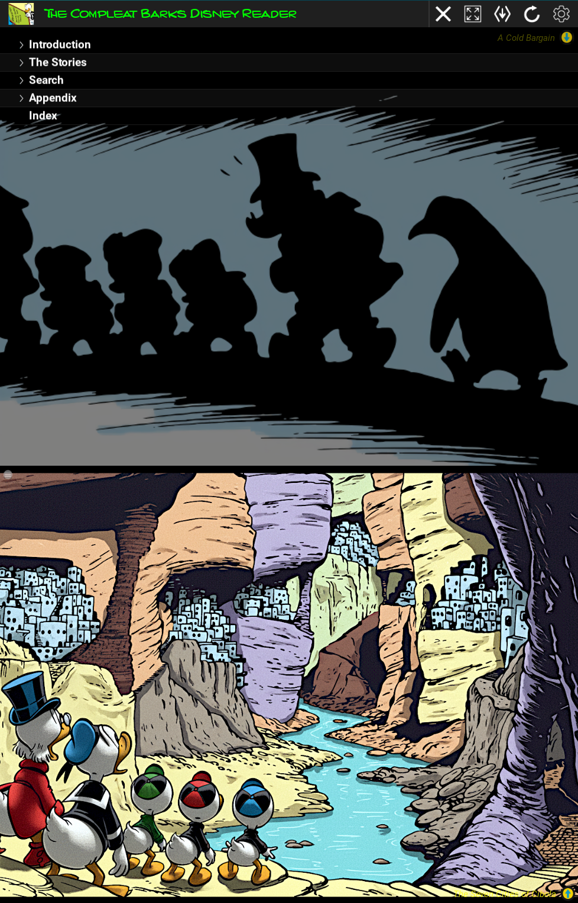
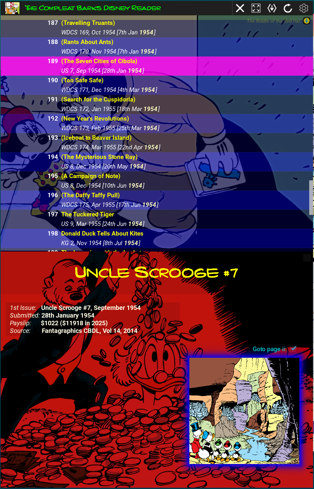
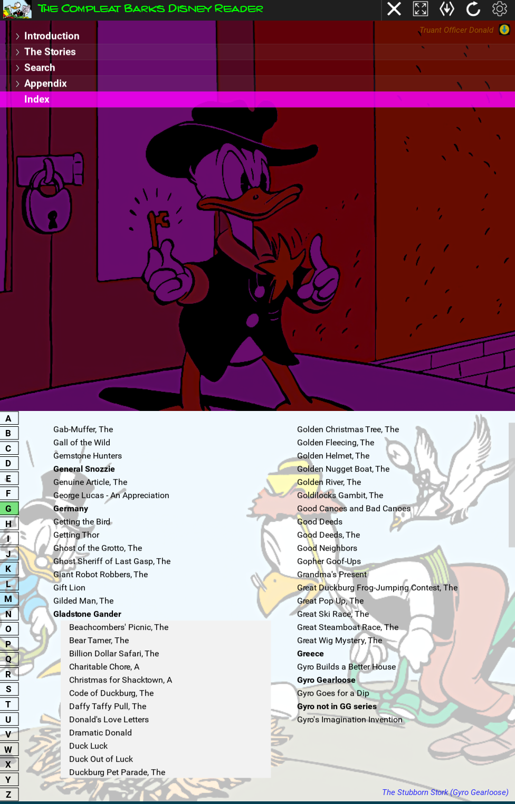

The Compleat Barks Disney Reader
The Compleat Barks Disney Reader is a multi-platform app for reading your digital copy of the Fantagraphics Complete Carl Barks Disney Library. This app knows all the Barks disney stories and how they are laid out in the Fantagraphics library. It can help you read the stories chronologically or by series or by categories/tags; and there is a title/tag search option and a full index. Once you've navigated to your story of choice, the reader will open separate window and present the stories with pages centered and with the original page numbering. Each story is individually itemised and accessible from the navigation view. The app as a whole has copius amounts of Barks panels as backgrounds and enhancements to the navigation process. And a key focus is to make this a complete reader. So all censorship issues found in the Fantagraphics library have been addressed. They have been carefully fixed using digital versions of the original comics or the CBL, and colored in the flat Fantagraphics style.
I have loved Barks' stories since a kid and as a teenager I dreamt of a complete uncensored Barks library. That almost happened with the CBL and CBL in color, except, sadly, for "Darkest Africa" and "Voodoo Hoodoo." The Fantagraphics library is pretty good (although I'm not a fan of the smaller pagesize). But the digital edition of the library is a game-changer. This democratizes access to all Barks' Disney work and will allow quality uncensored presentations in the future. My hope is The Compleat Barks Disney Reader will be a good start to this.
Key Highlights
- Complete chronological reader for the Fantagraphics Complete Carl Barks Disney Library.
- Censorship addressed: language fixes, and "Silent Night," "Good Deeds," and "Bill Collectors" restored
- Favourite, significant, and fun Barks panels used as backgrounds and enhancements throughout the reader
- Full index with links to all stories
- Cross-platform compatibility - works on Windows, macOS, and Linux
What's Included
The download package includes the main application executable along with approximately 2GB of data files (comic panels and censorship fixes). Everything you need to get started is included - no additional downloads required. You need to supply your own Fantagraphics digital library in a single directory of comic zips.
Features
Here are the main features of The Compleat Barks Disney Reader.
🎯 Chronolgical Access to All Stories
The table of contents is a treeview allowing you to browse titles chronologically, or by series, or category. Story ordering is done using Barks's submission dates - the dates he recorded as having submitted a story to Western Publishing. Chronological ordering is also maintained through Series and Category titles.
⚡ Censorship Removed
Unfortunately, in later volumes, censorship started creeping into the Fantagraphics editions. "Silent Night" and "Good Deeds" were omitted without comment, and a page was deleted from "The Bill Collectors." Language was changed. These have been painstakingly restored using digitised images and text from "The Fine Art of Donald Duck" and the CBL. Hopefully you'll find these comparable in quality to the other uncensored stories. Longstanding censorship has also been tackled (this may be a bit controversial but can be turned off): 'Larkie' has been replaced with 'Harpie' in "The Golden Fleecing," Bombie's eyes are white without pupils in "Voodoo Hoodoo," and 'Theah' (and similar Southern words) have been replaced with 'Dere' in "Lost in the Andes!"
🎨 Copius Amounts of Barks Panels as Backgrounds
There are hundreds of individual comic panels scattered throughout the app as backgrounds or story enhancements. And there is a view where you can randomly cycle through the panels and select the story the panel comes from. Also, there are many, many AI versions of panels that give fun re-interpretations of Barks' art.
When you click on a story title you are taken to a view with a panel from the story as a background together with the story title, first published edition, submission date, how much Barks was paid for the story, the Fantagraphics volume and year, and optionally, brief background notes to the story. There is another smaller panel image in the view that acts as a portal to the actual comic book reader for the story.
🔒 You Supply Your Fantagraphics Zips
All you need to do is make sure all your Fantagraphics comic zips are in a single directory and the name of each zip starts with the volume number - so '01' to '30'. The zips must be in 'zip' format not 'rar' format. If you have a volume in the 'rar' format you just need to un-rar it, then zip it up. If you put your zips in a folder called "Fantagraphics Complete Carl Barks Disney Library", and it's on the Barks readers' search path (see the Installation tab) it will be automatically added to the readers' configuration. Otherwise, when you first use the app, you will have the opportunity to tell it where to look for the zips.
📊 Fullscreen Reader
When you select a story through the title portal image, the comic is presented in a new window. Each comic page is centered so there is consistent positioning from page to page, and the page numbering uses the original comic page numbering not the Fantagraphics numbering. There are menu options to toggle fullscreen, goto beginning or end, and goto a page number.
🔄 Works on Windows, macOS, and Linux
The app is written in Python and has been run and tested on Windows, Ubuntu, and Macos. With further work, it should be possible to get it running on Android and ipads.
Screenshots
Main Window
Selecting a Title
Reading a Story
Full Index with Links
Installation Guide
Follow these platform-specific instructions to install The Compleat Barks Disney Reader on your system.
Windows Installation
Step 1: Download
Download the latest Windows release from the Download tab or directly from GitHub Releases. The files to download are:
- "barks-reader-win.exe"
- "barks-reader-data-1.zip"
- "barks-reader-data-2.zip"
Step 2: Move the Downloaded Files
Move the executable and data files to your preferred location but note that this must be a directory where you have write permissions, such as:
- "C:\Users\YourUsername\BarksReader"
- "C:\BarksReader"
- "C:\Users\YourUsername\Documents\BarksReader"
The following steps assume you've chosen "C:\Users\YourUsername\BarksReader" as the Barks reader app directory.
Step 3: Organise Your Fantagraphics Zips
Your Fantagraphics comic zips must be in a single folder and can be either '.zip' or '.cbz' files. The first part of each volumes' filename must be the volume number, from '01' to '29'. For example:
| 01 - Donald Duck - Finds Pirate Gold.cbz |
| 02 - Donald Duck - Frozen Gold.zip |
| ... |
| 28 - Uncle Scrooge - 'Cave of Ali Baba'.zip |
| 29 - Donald Duck - 'The Lonely Lighthouse on Cape Quack'.cbz |
See the next step for more information on making it easier for the app to automatically configure itself with your Fantagraphics zips.
Step 4: Optional - Move Your Fantagraphics Zips
If you put your Fantagraphics comic zips in a folder called "Fantagraphics Complete Carl Barks Disney Library"
and make sure this folder is under one of these locations:- "C:\Users\YourUsername\BarksReader"
- "C:\Users\YourUsername\Documents"
- "C:\Users\YourUsername\Books"
Step 5: Run the Application
Navigate to the new app folder and double-click barks-reader-win.exe to launch the application.
You may need to allow the app through Windows Defender SmartScreen on first run.
You can also create a shortcut by right-clicking: barks-reader-win.exe → Send to → Desktop (create shortcut) for easy access.
Step 6: On First Launch
When the application is first launched it will do further installation steps:
- Run the astral python package manager 'uv' to download and install python packages required by the app,
- Unzip "barks-reader-data-1.zip" and "barks-reader-data-2.zip" and copy their contents to "C:\Users\YourUsername\BarksReader\Reader Files",
- Create the necessary default configuration files in "C:\Users\YourUsername\BarksReader\config",
- Search for a directory called "Fantagraphics Complete Carl Barks Disney
Library" with your comic zips in the following locations:
- "C:\Users\YourUsername\BarksReader"
- "C:\Users\YourUsername\Documents"
- "C:\Users\YourUsername\Books"
- And finally, run the app.
- It will only do the installation steps on the first app launch.
Step 7: Afer the First Launch
The "barks-reader-data-1.zip" and "barks-reader-data-2.zip" files are no longer needed, and you can safely delete them.
macOS Installation
Step 1: Download
Download the latest macOS release from the Download tab or directly from GitHub Releases. The files to download are:
- "barks-reader-macos"
- "barks-reader-data-1.zip"
- "barks-reader-data-2.zip"
Step 2: Move the Downloaded Files
Move the executable and data files to a user-writable location such as:
- "~/Applications/BarksReader" (create folder if it doesn't exist)
- "~/BarksReader"
- "~/Documents"
The following steps assume you've chosen "~/Applications/BarksReader" as the Barks reader app directory.
Step 3: Grant Permissions
Right-click (or Control-click) the application and select "Open" to bypass Gatekeeper on first run.
You may need to go to System Preferences → Security & Privacy and click "Open Anyway".
Step 4: Organise Your Fantagraphics Zips
Your Fantagraphics comic zips must be in a single folder and the first part of each volumes' filename must be the volume number, from '01' to '28'. For example:
| 01 - Donald Duck - Finds Pirate Gold.cbz |
| 02 - Donald Duck - Frozen Gold.cbz |
| ... |
| 27 - Donald Duck - 'Duck Luck'.cbz |
| 28 - Uncle Scrooge - 'Cave of Ali Baba'.cbz |
See the next step for more information on making it easier for the app to automatically configure itself with your Fantagraphics zips.
Step 5: Optional - Move Your Fantagraphics Zips
If you put your Fantagraphics comic zips in a folder called "Fantagraphics Complete Carl Barks Disney Library"
and make sure this folder is under one of these locations:- "~/Applications/BarksReader"
- "~/BarksReader"
- "~/Documents"
- "~/Books"
Step 6: Run the Application
After granting permissions, the application will launch normally. Future launches can be done by double-clicking.
Step 7: On First Launch
When the application is first launched it will do further installation steps:
- Run the astral python package manager 'uv' to download and install python packages required by the app
- Unzip "barks-reader-data-1.zip" and "barks-reader-data-2.zip" and copy their contents to "~/Applications/BarksReader/Reader Files"
- Create the necessary default configuration files in "~/Applications/BarksReader/config"
- Search for a directory called "Fantagraphics Complete Carl Barks Disney
Library" with your comic zips in the following locations:
- "~/Applications/BarksReader"
- "~/BarksReader"
- "~/Documents"
- "~/Books"
- And finally, run the app
- It will only do the installation steps on the first app launch
Step 8: After the First Launch
The "barks-reader-data-1.zip" and "barks-reader-data-2.zip" files are no longer needed, and you can safely delete them.
Linux Installation
Step 1: Download
Download the latest Linux release from the Download tab or directly from GitHub Releases. The files to download are:
- "barks-reader-linux"
- "barks-reader-data-1.zip"
- "barks-reader-data-2.zip"
Step 2: Move the Downloaded Files
Move the downloaded files to a user-writable location such as:
- "~/opt/barks-reader"
- "~/barks-reader"
- Any directory in your home folder
The following steps assume you've chosen "~/opt/barks-reader" as the Barks reader app directory.
Step 3: Organise Your Fantagraphics Zips
Your Fantagraphics comic zips must be in a single folder and the first part of each volumes' filename must be the volume number, from '01' to '28'. For example:
| 01 - Donald Duck - Finds Pirate Gold.cbz |
| 02 - Donald Duck - Frozen Gold.cbz |
| ... |
| 27 - Donald Duck - 'Duck Luck'.cbz |
| 28 - Uncle Scrooge - 'Cave of Ali Baba'.cbz |
See the next step for more information on making it easier for the app to automatically configure itself with your Fantagraphics zips.
Step 4: Optional - Move Your Fantagraphics Zips
If you put your Fantagraphics comic zips in a folder called "Fantagraphics Complete Carl Barks Disney Library"
and make sure this folder is under one of these locations (you could use a symlink to do this):- "~/opt/barks-reader"
- "~/Documents"
- "~/Books"
Step 5: Run the Application
Run the executable "~/opt/barks-reader/barks-reader-linux" either from a file explorer or a terminal.
Or create a desktop shortcut by creating a .desktop file in "~/.local/share/applications/"
Step 6: On First Launch
When the application is first launched it will do further installation steps:
- Run the astral python package manager 'uv' to download and install python packages required by the app
- Unzip "barks-reader-data-1.zip" and "barks-reader-data-2.zip" and copy their contents to "~/opt/barks-reader/Reader Files/"
- Create the necessary default configuration files in "~/opt/barks-reader/config"
- Search for a directory called "Fantagraphics Complete Carl Barks Disney
Library" with your comic zips in the following locations:
- "~/opt/barks-reader"
- "~/Documents"
- "~/Books"
- And finally, run the app
- It will only do the installation steps on the first app launch
Step 7: After the First Launch
The "barks-reader-data-1.zip" and "barks-reader-data-2.zip" files are no longer needed, and you can safely delete them.
System Requirements
Ensure your system meets these requirements for optimal performance.
Minimum Requirements
| Component | Requirement |
|---|---|
| Operating System | Windows 10/11, macOS 10.15+, or Linux (Ubuntu 20.04+, similar) |
| Processor | Intel Core i3 or AMD equivalent (2.0 GHz+) |
| Memory (RAM) | 4 GB |
| Storage | 15 GB available space (includes app, data files, and your Fantagraphics zips) |
| Graphics | Integrated graphics with 512MB VRAM |
| Display | 1920x1080 resolution or higher |
Recommended Requirements
| Component | Requirement |
|---|---|
| Operating System | Windows 11, macOS 12+, or Ubuntu 22.04+ |
| Processor | Intel Core i5/i7 or AMD Ryzen 5/7 (3.0 GHz+) |
| Memory (RAM) | 8 GB or more |
| Storage | SSD with 15 GB available space (includes app, data files, and your Fantagraphics zips) |
| Graphics | Dedicated GPU with 2GB+ VRAM |
| Display | 2560x1440 resolution or higher |
Additional Notes
- Internet connection required for initial setup and updates.
- Some features may require additional libraries (automatically installed).
- You must supply your own comic zips for the Fantagraphics Complete Carl Barks Disney Library.
- Performance is hard to gauge accurately. But for example, the app works very well with Ubuntu 24.04 on an AMD Ryzen 7 5700G PC with SSDs and 16GB of RAM.
Troubleshooting
Common issues and their solutions. If your problem isn't listed here, please check our GitHub Issues page.
❌ Application won't start / crashes on launch
Solutions:
- Ensure all files from the ZIP archive are extracted together
- Check that your system meets the minimum requirements
- Try running as administrator (Windows) or with elevated permissions
- Check that data files are in the correct directory
- Reinstall from a fresh download
🔒 "App can't be opened" error (macOS)
Solutions:
- Right-click the app and select "Open" instead of double-clicking
- Go to System Preferences → Security & Privacy → Click "Open Anyway"
- If still blocked, run in Terminal:
xattr -cr /path/to/MyApp.app
⚠️ Missing data files error
Solutions:
- Ensure the complete archive was downloaded (check file size ~2GB)
- Re-extract the archive - partial extraction may have occurred
- Verify data folder is in the same directory as the executable
- Check available disk space
🐢 Performance issues / slow operation
Solutions:
- Close other resource-intensive applications
- Ensure you meet the recommended system requirements
- Check for available system updates
- Move data files to an SSD if using HDD
- Reduce quality settings in app preferences (if available)
🔄 Update issues
Solutions:
- Manually download the latest version from GitHub Releases
- Backup your settings before updating
- Completely remove old version before installing new one
- Check GitHub releases page for version-specific notes
Still Having Issues?
If none of these solutions work, please visit our GitHub repository and create an issue with:
- Your operating system and version
- Application version
- Detailed description of the problem
- Steps to reproduce the issue
- Any error messages or logs
Download The Compleat Barks Disney Reader
Get the latest version of The Compleat Barks Disney Reader for your platform. All downloads are hosted on GitHub Releases.
Installation
After downloading, head to the Installation tab for platform-specific setup instructions.